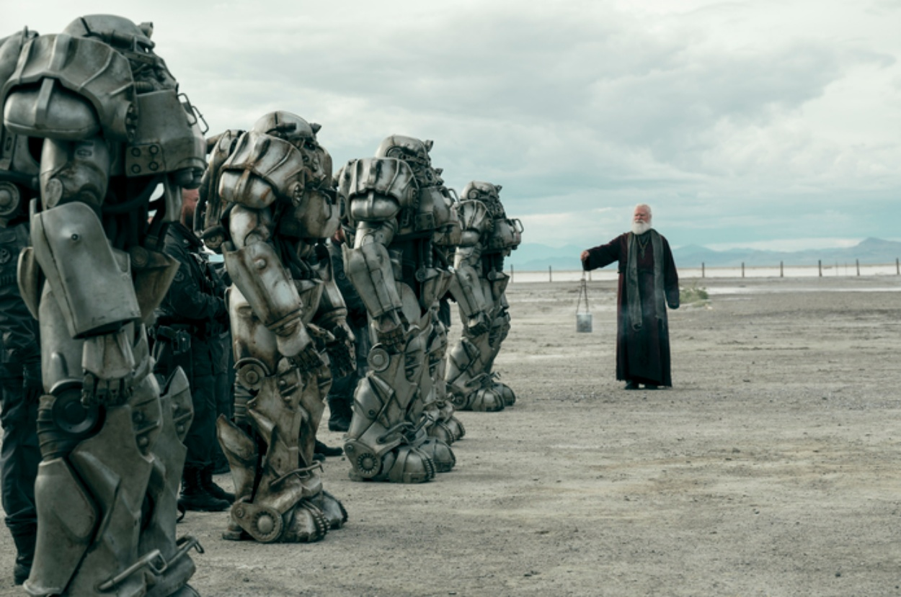

Fundada poco después de la Gran Guerra por el Capitán Roger Maxson, la Hermandad del Acero es una orden cuasi-religiosa y militarista obsesionada con la tecnología. Su misión principal no es gobernar a la gente del Yermo, sino preservar el conocimiento humano y acaparar tecnología avanzada para evitar que la humanidad vuelva a destruirse a sí misma. Divididos en castas de Paladines, Caballeros y Escribas, son fácilmente reconocibles por sus imponentes servoarmaduras y su maestría con las armas de energía. A menudo se muestran aislacionistas y desconfiados hacia los forasteros (a quienes consideran incapaces de manejar tecnología peligrosa). Aunque sus ideales nacieron de un deseo de protección, su fanatismo a menudo los pone en conflicto directo con cualquier otra fuerza que intente reclamar los secretos del viejo mundo. Ad victoriam.